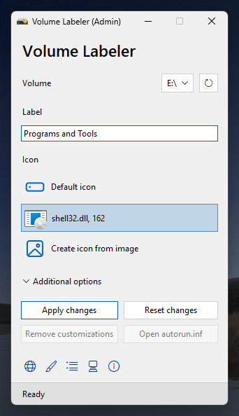
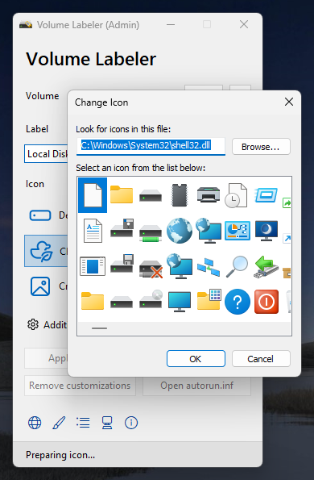
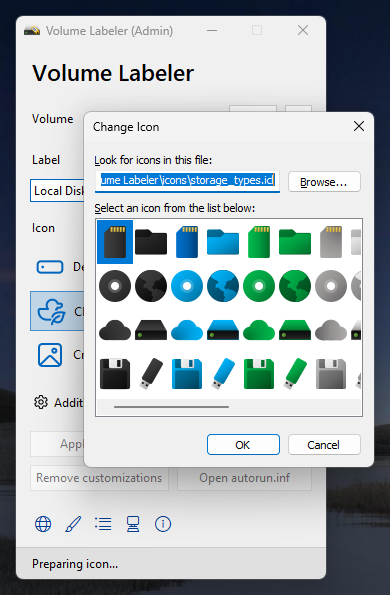
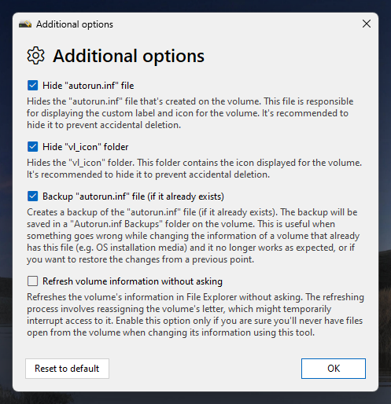
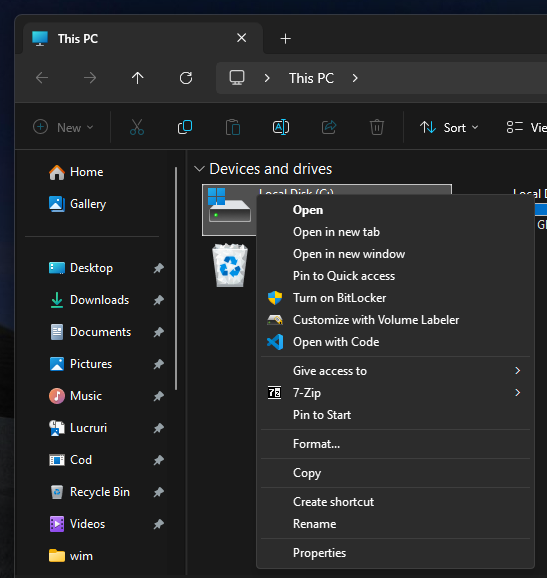
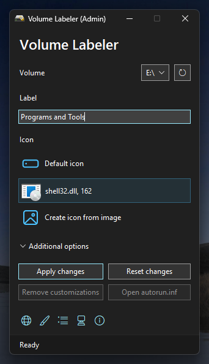
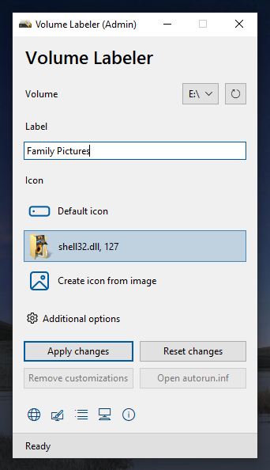
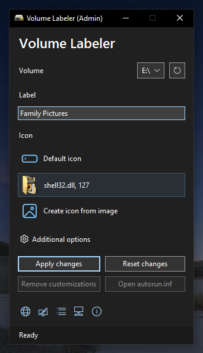

Features
- When selecting a volume, it checks if autorun.inf is present on it. It then retrieves its actual label and icon, so you don't have to type the same label if you only want to change the volume's icon or select the same icon if you only want to change the volume's label.
- Multiple icon options: default icon, custom icon (.ico or from an .exe, .dll or .icl file) or icon from image (converts the selected image to an .ico file).
- Refresh volume information in the File Explorer after applying the changes (requires running the app as administrator and not using the volume; doesn't work with the system volume)
- Option to hide the autorun.inf file and the vl_icon folder (the icon is stored in that folder).
- Option to backup the autorun.inf file for easily restoring it later if something wents wrong or you want to revert your changes to a previous point.
- Option to get rid of all customizations (including the ones not made by Volume Labeler).
- Entry in the volumes' right click context menu for easily customizing volumes (available only in the classic context menu at the moment).
- Light and dark themes and localization support.
You can get Volume Labeler by clicking the download button for the installer or portable build for the appropiate architecture for your computer down bellow.